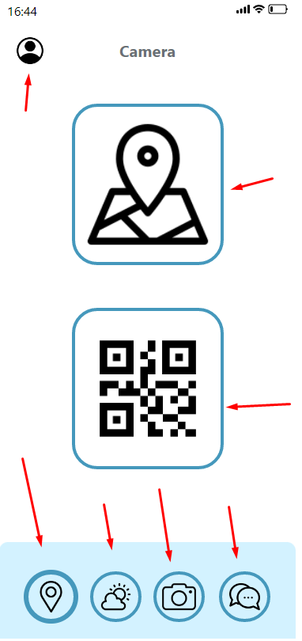
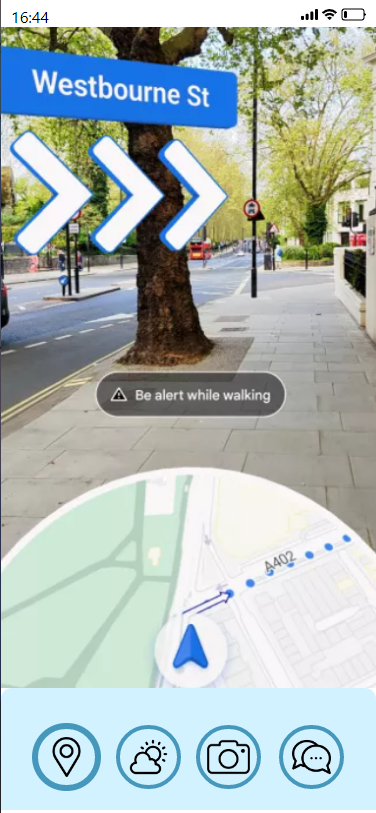

Community Draft
ToHa application is dedicated to groups of tourists participating in a trip/holiday/vacation. The application would provide updated schedules, audio and visual guides, directions to POIs (Points of Interest), group and individual chats, plus timers and alarms for each location.
By using the camera within the app , the user will experience various variants of an augmented reality UI for a specific POI, detailing each artifact and recommending simulations of experiencing the objective when the weather or other factors do not allow the physical access.The application could also sync with a smartwatch to benefit from dedicated features based on this wearable device's platform.
Our high-level goals are to:
Our scope is to digitalize the trips for the vacation agency to make it easier for both parties. When a person wants to travel with an agency all they have to do is to check the app after the guide adds them to the holiday group that they chose.
For our application we made prototypes for 2(two) different platforms: mobile and smartwatch.
Mobile: Prototype
Smartwatch: Prototype
Date of Birth: 10/10/2002 (21 years)
Gender: Male
Location: Suceava, Romania
Work place: Student
School: UAIC
Technology Level: high
Ungureanu Calin (primary persona) is a student at Alexandru Ioan Cuza University Iași and wants to travel alone for the first time in another country (Italy). He is a little bit concerned because he isn’t an organized person and,because he only traveled with his parents and his mum was the one who planned the trip , it’s his first time deciding on the itinerary..
Because he wants to learn the cultural aspect of Italy he found out about the app ToHa where everything related to a vacation is collected in a single place, and he liked the idea of having an organized vacation without him actually searching all the places and thinking about the right time to leave a POI and go to another.
Also he is very happy about the visual guides and directions to POIs because he gets lost very easily in new places , is bad with maps and never went alone to a new place.
Calin had an amazing time in Italy with the help of the ToHa app.He didn’t struggled as he thought he would with the directions because he just had to follow the AR indicators , also he didn’t felt lonely because he made new friends with other people that signed up in the app for that itinerary.He also found out new interesting facts about the POIs he went to with the help of the guide and the app , he also double checked all the informations by also using the AR support for the POI.He easily followed the itinerary because of the timers and schedule .
Date of Birth: 11/03/1963 (60 years)
Gender: Male
Location: Brasov, Romania
Work place: Tourist guide
Technology Level: medium
Popovici Adrian was passionate about the history of his city from a young age, so he decided to become a tourist guide. He has been in this position for a long time and since he got old, he wouldn’t mind a little help with managing the tourists.
He often had problems in getting all the people from a group to listen to him. It is also hard to talk to people that speak different languages in a group when trying to tell them the plan for the next POI.
Popovici Adrian uses the app in order to announce the tourists about the next POI and the app automatically translates what he writes in the language that each tourist speaks. It also helps him to tell tourists exactly where he is, so that they don’t get lost when they get back from their break. Also he can set the timers for breaks, so that he doesn’t get asked from every tourist at what hour they have the next POI and where.
Date of Birth: 15/02/1977 (46 years)
Gender: Male
Location: Bucuresti, Romania
Work place: Tourist agency manager
Technology Level: high
Lavric Andrei has been working in the domain for 25+ years, so he has a vast knowledge about what it takes to make a good vacation itinerary. He is not an athletic person, given that he works at his desk all day.
He likes what he does very much, because he was passionate about traveling from a young age. In his first organized trip, in which he was a tourist guide, he met his now wife.
Lavric Andrei uses the app in order to make the itineraries faster, easier and without mistakes. The app made his work easier, and now he does not need to work overtime so he gets to spend more time with his children.
Date of Birth: 01/05/1958 (65 years)
Gender: Female
Location: Arad, Romania
Work place: Retired teacher
Technology Level: low
Andrici Liliana is a retired teacher that now has all the in the world to travel. She like to plan vacations with her friend Popescu Lucretia.
Andrici Liliana and Popescu Lucretia have tried to book a vacation organized by a agency using toha app. They managed to get around the city and get in time to the objectives. Unlike the people that used the app, they struggled to get to the POIs, and also it took longer, having shorter breaks and more stress.
In this scenario we have a couple who is traveling while using our app.
In the first picture they check the time they have left from their break by using the timer functionality.
In the next photo they walk to the next POI by using the AR navigation system.
Next they check their schedule for the rest of the day to see what other places they will visit.
They use the chat from the app to see if the other tourists arrived. Finally, they reunite with the group.
In this scenario we have a lady and her mom who are traveling while using the ToHa app.
In the first picture the daughter realized from the app that is synced with her smartwatch that the state of the weather won't allow them to visit the objective.
In the next photo the mother learns about the other ways of experiencing a POI without going out. The daughter is using the functionality from the app that recommends simulations of experiencing the objective when the weather or other factors do not allow the physical access
Next they go out to check the other POI's left for the day because the weather got nicer.
In the last part they arrive at the destination and learn from the museum guide about the QR codes that will help them see details about the artifacts.
In this sketch we tried to visualize our app by searching each functionality to see what options will tourists have .
In these sketches we tried to show how the augmented reality UI for a specific POI will look in our application . The left design is found on the internet , the right one is made by us using Canva.
In this sketch we tried to visualize how the smartwatch app will look like , more specifically the timer and the navigation functionalities.
AR - when the tourist uses the augmented reality UI for a specific POI or the visual guides, directions to a specific location.
Touch - whenever the user interacts with our mobile app.
Audio - when using the navigation system the users will also get audio orientetion guides.
The most important part of the UI is located in a center zone, grouping additional tools in small-size areas.
Placing the content in separate labeled containers that could be expanded.
The place the button that finishes a transaction is at the end of the visual flow, and must focus user’s attention.